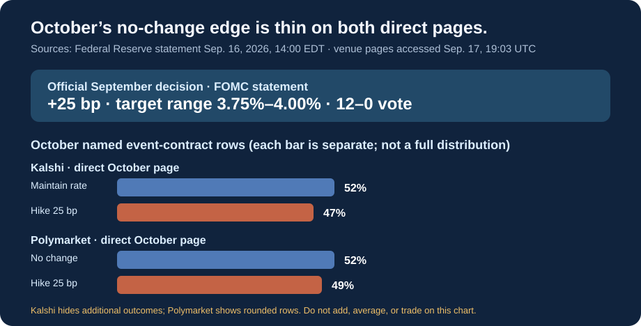

Fed Decision Watch
October’s named 25 bp-hike rows are 67% on both direct event pages.
At 13:33 UTC on September 25, Kalshi’s direct October page displayed 67% for “Hike 25bps” and 33% for “Fed maintains rate.” Polymarket’s direct October contract displayed 67% for a 25 bp increase and 33% for no change. These are separate event-contract readings, not a shared forecast.
Official September result
The FOMC statement records a 25 bp increase to a 3.75%–4.00% target range, approved 12–0.
Kalshi October event contract
67% · Hike 25bps
33% · Fed maintains rate
Since 19:06 UTC Sep. 24: named hike +2 points; maintain rate −2 points. Hike >25bps was 1%; two outcomes are hidden.
Polymarket October event contract
67% · 25 bp increase
33% · No change
Since 19:06 UTC Sep. 24: named hike +1 point; no change −1 point. Smaller outcomes are displayed separately and may be rounded.
CME FedWatch
No current October figure shown.
CME describes FedWatch as futures-implied; the direct live grid was unreadable in this check.

What changed
Compared with the pool’s 19:06 UTC access on September 24, Kalshi’s named 25 bp-hike row rose 2 percentage points and its named maintain-rate row fell 2. Polymarket’s named hike row rose 1 point and its named no-change row fell 1. These are two pool access times, not a continuous price path, so they do not show why either venue moved.
There is no assigned catalyst
The pool did not capture a market row immediately around an official release or Fed policy communication. It does not attribute the current readings to a release, speech, or trade.
Compare like with like before calling a gap meaningful
1. Name the instrument
Check whether the number comes from a named event contract or a futures-implied calculation. They are not interchangeable.
2. Match the outcome and time
Read the contract rule or method, exact outcome and observation time. An October row is not a year-end path.
3. Do not infer a trade
A numerical difference does not establish arbitrage. Fees, execution, access and suitability are outside this watch.
Next official dates
- Sep. 29 · 10:00 ETBLS Job Openings and Labor Turnover Survey for August.
- Sep. 30 · 08:30 ETBEA Personal Income and Outlays for August.
- Oct. 2 · 08:30 ETBLS Employment Situation for September.
- Oct. 7 · 14:00 ETMinutes of the September 15–16 FOMC meeting.
- Oct. 14 · 08:30 ETBLS Consumer Price Index for September.
- Oct. 28 · 14:00 ETFOMC statement; press conference at 14:30 ET.
Official calendars: Federal Reserve FOMC calendar · BLS September calendar · BEA release schedule. Market pages: Kalshi October event · Polymarket October event.